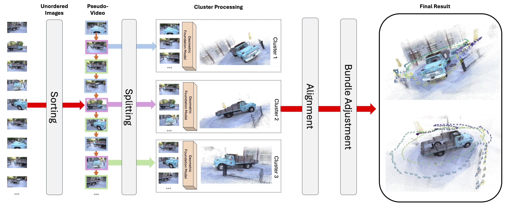

MERG3R: A Divide-and-Conquer Approach to Large-Scale Neural Visual Geometry
Abstract
Recent advancements in neural visual geometry, including transformer-based models such as VGGT and Pi3, have achieved impressive accuracy on 3D reconstruction tasks. However, their reliance on full attention makes them fundamentally limited by GPU memory capacity, preventing them from scaling to large, unordered image collections. We introduce MERG3R, a training-free divide-and-conquer framework that enables geometric foundation models to operate far beyond their native memory limits. MERG3R first reorders and partitions unordered images into overlapping, geometrically diverse subsets that can be reconstructed independently. It then merges the resulting local reconstructions through an efficient global alignment and confidence-weighted bundle adjustment procedure, producing a globally consistent 3D model. Our framework is model-agnostic and can be paired with existing neural geometry models. Across large-scale datasets—including 7-Scenes, NRGBD, Tanks & Temples, and Cambridge Landmarks—MERG3R consistently improves reconstruction accuracy, memory efficiency, and scalability, enabling high-quality reconstruction when the dataset exceeds memory capacity limits.
Method
Given an unordered set of images, we first sort them into a pseudo-video sequence, then split the sequence into multiple interleaved subsets. Each subset is independently processed by a geometric foundation model to produce local pointmaps and poses. The resulting clusters are aligned into a common reference frame and jointly refined via global bundle adjustment, producing a coherent final reconstruction.
First image description.
Second image description.
Video Presentation
Poster
BibTeX
@article{YourPaperKey2024,
title={Your Paper Title Here},
author={First Author and Second Author and Third Author},
journal={Conference/Journal Name},
year={2024},
url={https://your-domain.com/your-project-page}
}